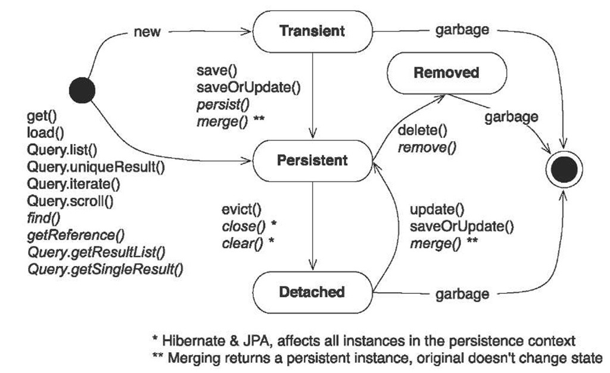

Hibernate
Сущности (Entities)
An entity is a lightweight persistent domain object. The primary programming artifact is the entity class. An
entity class may make use of auxiliary classes that serve as helper classes or that are used to represent the
state of the entity.
Entity Class
-
The entity class must be annotated with the Entity annotation or denoted in the XML descriptor as an
entity.
-
The entity class must have a no-arg constructor. The entity class may have other constructors as well.
The no-arg constructor must be public or protected.
-
The entity class must be a top-level class. An enum or interface must not be designated as an entity.
-
The entity class must not be final. No methods or persistent instance variables of the entity class may be
final.
-
If an entity instance is to be passed by value as a detached object (e.g., through a remote interface), the
entity class must implement the Serializable interface.
-
Entities support inheritance, polymorphic associations, and polymorphic queries.
-
Both abstract and concrete classes can be entities. Entities may extend non-entity classes as well as
entity classes, and non-entity classes may extend entity classes.
-
The persistent state of an entity is represented by instance variables, which may correspond to Java-
Beans properties. An instance variable must be directly accessed only from within the methods of the
entity by the entity instance itself. Instance variables must not be accessed by clients of the entity. The
state of the entity is available to clients only through the entity’s methods—i.e., accessor methods (getter/
setter methods) or other business methods.
Entity State in Persistence Context
-
transient
the entity has just been instantiated and is not associated with a persistence context.
It has no persistent representation in the database and typically no identifier value
has been assigned (unless the assigned generator was used).
-
managed, or persistent
the entity has an associated identifier and is associated with a persistence
context. It may or may not physically exist in the database yet.
-
detached
the entity has an associated identifier but is no longer associated with a persistence
context (usually because the persistence context was closed or the instance was evicted
from the context)
-
removed
the entity has an associated identifier and is associated with a persistence context,
however, it is scheduled for removal from the database.
Entity Lifecycle

-
Entity Instance Creation
Entity instances are created by means of the new operation. An entity instance, when first created by
new is not yet persistent. An instance becomes persistent by means of the EntityManager API.
-
Persisting an Entity Instance
A new entity instance becomes both managed and persistent by invoking the persist method on it or
by cascading the persist operation.
The semantics of the persist operation, applied to an entity X are as follows:
-
If X is a new entity, it becomes managed. The entity X will be entered into the database at or
before transaction commit or as a result of the flush operation.
-
If X is a preexisting managed entity, it is ignored by the persist operation. However, the persist
operation is cascaded to entities referenced by X, if the relationships from X to these other
entities are annotated with the cascade=PERSIST or cascade=ALL annotation element
value or specified with the equivalent XML descriptor element.
-
If X is a removed entity, it becomes managed.
-
If X is a detached object, the EntityExistsException may be thrown when the persist
operation is invoked, or the EntityExistsException or another PersistenceException
may be thrown at flush or commit time.
-
For all entities Y referenced by a relationship from X, if the relationship to Y has been annotated
with the cascade element value cascade=PERSIST or cascade=ALL, the persist
operation is applied to Y.
-
Removal
A managed entity instance becomes removed by invoking the remove method on it or by cascading the
remove operation.
The semantics of the remove operation, applied to an entity X are as follows:
-
If X is a new entity, it is ignored by the remove operation. However, the remove operation is
cascaded to entities referenced by X, if the relationship from X to these other entities is annotated
with the cascade=REMOVE or cascade=ALL annotation element value.
-
If X is a detached entity, an IllegalArgumentException will be thrown by the remove
operation (or the transaction commit will fail).
-
If X is a removed entity, it is ignored by the remove operation.
-
A removed entity X will be removed from the database at or before transaction commit or as a
result of the flush operation.
After an entity has been removed, its state (except for generated state) will be that of the entity at the
point at which the remove operation was called.